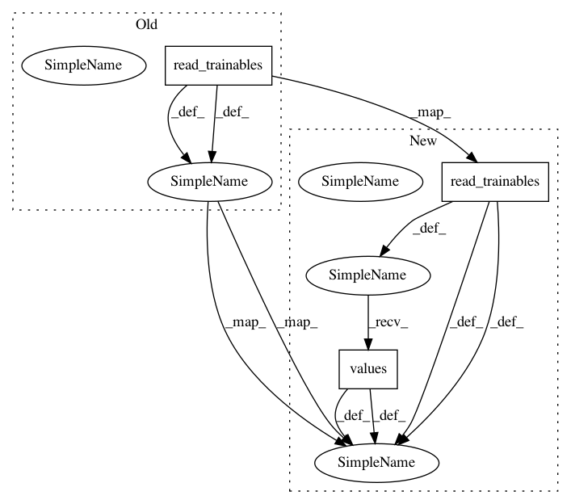

88ddcb8f6d74132d26f4cbf8d8b3f380cb8cd7b4,tests/test_priors.py,TestPriorMode,testLogNormalMode,#TestPriorMode#,83
Before Change
m.compile()
opt = gpflow.train.ScipyOptimizer()
opt.minimize(m)
xmax = [transform.backward(x) for x in m.read_trainables()]
assert_allclose(xmax, 3, rtol=1e4)
def testBetaMode(self):
After Change
m.compile()
opt = gpflow.train.ScipyOptimizer()
opt.minimize(m)
xmax = [transform.backward(x) for x in m.read_trainables().values()]
assert_allclose(xmax, 3, rtol=1e4)
def testBetaMode(self):
In pattern: SUPERPATTERN
Frequency: 3
Non-data size: 3
Instances
Project Name: GPflow/GPflow
Commit Name: 88ddcb8f6d74132d26f4cbf8d8b3f380cb8cd7b4
Time: 2017-11-15
Author: art.art.v@gmail.com
File Name: tests/test_priors.py
Class Name: TestPriorMode
Method Name: testLogNormalMode
Project Name: GPflow/GPflow
Commit Name: 88ddcb8f6d74132d26f4cbf8d8b3f380cb8cd7b4
Time: 2017-11-15
Author: art.art.v@gmail.com
File Name: tests/test_priors.py
Class Name: TestPriorMode
Method Name: testBetaMode
Project Name: GPflow/GPflow
Commit Name: 88ddcb8f6d74132d26f4cbf8d8b3f380cb8cd7b4
Time: 2017-11-15
Author: art.art.v@gmail.com
File Name: tests/test_hmc.py
Class Name: SampleGaussianTest
Method Name: test_burn